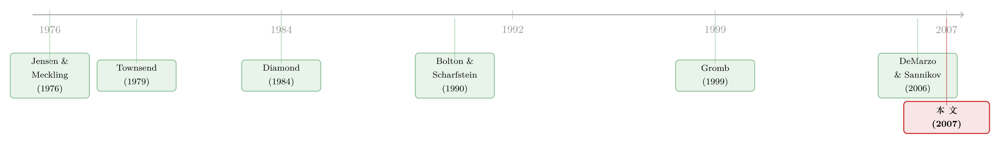

把债、信贷额度和股权，从一个代理问题里「长」出来
本文读的是 DeMarzo & Fishman (2007, Review of Financial Studies)：在一个「经理人能偷偷截留现金流」的长期代理模型里，他们不假设任何融资工具，却把长期债 (long-term debt)、信贷额度 (line of credit) 与股权 (equity) 作为最优契约的实现方式一并推导了出来——并顺带给出了债券的息票与期限、信贷额度的利率与上限、内部股与外部股的划分、以及股利政策。核心只有一个状态变量：经理人的延续价值 (continuation payoff)。
1 我们用的那些证券，到底是从哪来的？
打开任何一本公司金融教材，债、股权、信贷额度都是给定的。我们讨论它们之间怎么权衡——税盾对破产成本、债务约束对股东自由度——但很少有人追问一个更素朴的问题：为什么是这几样东西？ 为什么企业的外部融资，几百年来反复收敛到「一笔固定还本付息的长期债 + 一条随用随取的循环信贷 + 一份分股利的股权」这套组合上？
这不是一个修辞性的问题。如果我们把一个企业的融资关系剥到最底层——投资人出钱，经理人干活，现金流只有经理人看得见——那么「最优」的契约本可以是任意复杂的、写满了各种状态依存条款的数学对象。它凭什么长成债、信贷额度和股权这副我们熟悉的模样？
这正是 DeMarzo 和 Fishman 这篇论文要回答的。它的野心不在于「分析」既有证券，而在于从零推导它们。他们先把契约当成一个抽象的机制 (mechanism) 求解，解出来之后再证明：这个最优机制，恰好可以用债、信贷额度和股权这几样极其标准、极其简单的证券实现。于是我们有了一套关于长期债与外部股权融资的理论。
这篇论文是一条研究线上的关键一环。它的连续时间表亲——DeMarzo & Sannikov (2006)——把同样的逻辑搬到了布朗运动的世界里，让最优契约可以写成一个标准的微分方程。本文是离散时间、有限期的「母本」，证券设计 (security design) 的味道更浓。
2 张力从哪里来：一个能「偷钱」的经理人
故事的设定干净得近乎苛刻。有一个风险中性 (risk neutral) 的经理人，和一群风险中性、资金无限的投资人。投资人用无风险利率 r 贴现，把现金流 {c_t} 估值为 \(e^{-rt}E[c_t]\)；经理人则用主观贴现率 γ ≥ r 贴现——经理人更没耐心。这个 γ ≥ r 是整篇文章的暗线：正是它，给「长期债」赋予了存在的理由。
经理人有一个项目，期初要投入 I,他自己有一笔私房钱 Y_0。项目每期产生随机现金流 Y_t，各期相互独立、没有学习（E_s[Y_t] = μ_t）。这里有一道关键的信息墙：现金流的最低值 Y_t^0 是公开可见、可被投资人强制收取的；但超过最低值的那部分 Y_t − Y_t^0,只有经理人自己看得见。
于是道德风险 (moral hazard) 登场了：经理人可以瞒报现金流，把瞒下来的钱据为己有。每瞒一块钱，他能消费 λ,其中 λ ∈ [0,1]。1 − λ 就是「偷钱」的效率损耗（比如把利润转化成低效的在职消费）。λ = 1 是偷钱无成本；λ = 0 则代理问题消失。文章讨论 λ > 0 的情形。
那么，凭什么逼经理人把钱交出来？唯一的武器是终止 (termination)。任何一期现金流实现之后，项目都可能被终止：资产被处置，产生清算价值 L_t,经理人去找他最好的外部出路，得到 R_t ≥ 0。注意一个不对称：资产的处置价值 L_t 是可观测、可签约的（经理人能偷利润，但偷不走资产），而运营现金流不可签约。终止的威胁——尤其是这个威胁会在均衡中真实发生——就是让经理人愿意分钱的全部理由。
接着，一个自然的问题是：经理人能不能私下存钱、用各种花哨的消息系统来钻空子？论文第一步就把这条路堵死了。
3 先做减法：私下储蓄和「说谎」都是多余的
DeMarzo 和 Fishman 用一个类显示原理 (Revelation Principle) 的结果（命题 1）证明：我们可以只考虑这样一类契约——经理人把全部现金流交给投资人（yˆ_t = Y_t）、不瞒报、不私存、不提前退出，连额外的消息都不必发。
直觉极其朴素。假设某契约下经理人的最优反应是瞒报（yˆ_t < Y_t），我们总能设计一个新契约：让他把钱全交上来，再由投资人通过 d_t 把「净掉偷窃损耗后的那部分」λ(Y_t − yˆ_t) 付还给他。经理人的收益分毫不变，但投资人弱更优——因为偷钱（λ ≤ 1）和私存（存款回报 ρ ≤ r）都是弱无效率的。把这两处无谓的损耗挤掉，蛋糕只会更大。
这一步的妙处在于：它把一个「经理人可以采取无穷多种策略」的问题，压缩成了「经理人只决定一个延续价值如何演化」的问题。剩下要做的，是动态规划。
4 模型与最关键的推导：一切都压进一个状态变量
这是全文的技术核心，值得一步步走。
第一步：写下两个人的延续价值。 在没有私下储蓄的简化问题里，给定契约 σ 与经理人策略 φ,设 τ ≤ T 为终止时刻。经理人从 t 期之后继续这份契约的贴现收益是：
$$A_t(\sigma,\phi)=E\!\left[\sum_{t
我们把这个最核心的方程拆开来看：
对称地，投资人在 t 期末的贴现收益是：
$$B_t(\sigma,\phi)=E\!\left[\sum_{t
第二步：定义延续函数 (continuation function)。 由于现金流跨期独立、又没有私下储蓄，A_t 和 B_t 在 t 期是与历史无关的共识。于是最优契约必须在任何历史之后都最优——否则总能找到一个替代契约，保持经理人收益与激励不变、却抬高投资人收益。这就允许我们定义：
$$b^e_t(a)\equiv\max_{\sigma,\phi}B_t(\sigma,\phi)\quad\text{subject to}\quad A_t(\sigma,\phi)=a=\max_{\phi'}A_t(\sigma,\phi')$$
b^e_t(a) 是「给定经理人能拿到延续价值 a,投资人最多能拿到多少」的边界。它把 t 期之后所有与收益相关的信息，压缩进了一个数 a——经理人当前的延续价值。历史，被一个状态变量完全概括了。 最优契约提供激励的方式，无非是规定 a 如何随经理人的还款历史变化。
第三步：激励相容逼出「线性」。 这是最反直觉、也最优美的一步。经理人在某期面对现金流 Y_t,他可以多交一块、也可以少交一块。少交一块，立刻到手 λ;但契约会因此削减他的延续价值。激励相容要求：在最优处，延续价值对「上报现金流」的敏感度恰好等于 λ。一分不多，一分不少——多了是浪费（递延对没耐心的经理人是有成本的），少了经理人就会去偷。
这个「敏感度 = λ」的约束带来一个惊人推论：经理人当期拿到的现金是现金流的凸函数（先攒着不发、到了某个门槛才发），但他的总收益（当期现金 + 延续价值）却是现金流的线性函数。记住这条线性，它在第 6 节会反手解决一个困扰公司金融几十年的问题。
第四步：门槛结构。 在风险中性下，递延与即付的权衡有一个极其干净的解。当经理人的延续价值升到一个临界门槛时，边际上用「当期现金」补偿他更便宜——于是契约开始派现金。反过来，公司经营不善时，延续价值被一路下调，直到跌破「激励所需的最低有效补偿」。这时契约会在终止与「把延续价值重置到最低有效水平后重新开始」之间随机化（randomize）。
把这四步连起来：如果公司做得好，延续价值往上顶，顶到门槛就给经理人发钱；做得差，延续价值往下掉，掉到地板就掷一次硬币决定生死。整份契约，就是这个延续价值 a 的一场涨落。（关于「最优契约为什么一开始反而要容忍失败」的同源直觉，可参见《为什么最优的合约，一开始反而要「纵容」失败？》。）
5 反转：这场涨落，恰好就是一条信贷额度的余额
到这里，论文完成了最漂亮的一跃。延续价值 a 是个抽象的影子变量，看不见摸不着。但真正关键的一步在于——它可以被一条信贷额度的余额「实物化」。
实现方案是这样的：
- 经理人持有股权,因此公司派股利时他能分到现金；
- 但股利只有在信贷额度还清之后才发放。于是信贷额度的余额，恰好反向编码了经理人的延续价值：余额越低（额度越空），延续价值越高，离派现越近；余额顶到上限，就是延续价值跌到地板、触发违约。
公司做得好 → 用多出的现金流去偿还信贷额度 → 延续价值上升 → 还清后开始派股利；公司做得差 → 动用信贷额度 → 延续价值下降 → 额度用尽即违约,要么终止、要么债务被豁免、公司继续。这套涨落，与第 4 节那个抽象的 a 的动态严丝合缝。
那长期债和信贷额度，又各自扮演什么角色？论文讲得很清楚，二者分工不同：
- 长期债——服务于经理人的早期消费。因为
γ ≥ r,经理人没耐心，想早点拿钱花；一笔固定还本付息的长期债正好把未来的钱搬到现在。如果经理人并不没耐心（γ = r),公司就只发最低限度的长期债——还款额匹配现金流的最低可能值，一旦信贷额度还清便再无违约之虞。 - 信贷额度——服务于现金流的风险,提供恰到好处的财务松弛 (financial slack)。如果业务无风险,根本不需要信贷额度：固定的债务还款可以同时完成期初投资和经理人的早期消费。风险，才是信贷额度存在的理由。
至于股权，投资人和经理人各持的股份，决定了那笔股利如何在两人之间劈分。于是——债、信贷额度、股权，三样东西，各有各的根，全从一个代理问题里长了出来。
并且，论文给出两个很「实证友好」的命题：最优的债与信贷额度条款，与融资额无关;在某些情形下，甚至与道德风险的严重程度 λ 无关。而最优的债股比 (debt-equity ratio) 则是历史依存的——它取决于现金流分布（过去与未来）以及现金流实现的具体路径。这给「资本结构动态」提供了一个微观基础。（资本结构如何随违约风险一路漂移，可对照《债，其实一直在动：当「随机发债」补全了信用风险的另一半》。）
6 一个意外的彩蛋：这里没有资产替代问题
债务融资在传统叙事里总背着一口锅：资产替代 (asset substitution),又叫风险转移 (risk shifting)。股东（持有类似看涨期权的求偿权）有动机让公司变得更冒险，把财富从债主手里转走。这是 Jensen & Meckling (1976) 立起来的经典代理冲突。
可在这个模型里，资产替代问题消失了。原因正是第 4 节那条「线性」。经理人作为股东，他每期的总收益 = 当期现金 + 延续价值，而这个总和是业务现金流的线性函数。一个线性的收益，对均值保持的展宽 (mean-preserving spread) 无动于衷——把风险加大，经理人一分钱都多赚不到。所以即便最优契约里确实有债，经理人也没有任何动机去拔高现金流风险。这条线性，又是从激励相容约束里掉出来的。
别误读这个结论。它不是说「现实中没有资产替代」，而是说：在这个特定的、能偷现金流的代理框架里，最优契约自带了一道防火墙。它告诉我们资产替代并非债务的宿命，而要看摩擦的具体形态。
论文还把模型延伸到了隐藏努力 (hidden effort):经理人的股权份额决定了他出力的激励。对若干标准设定，他们证明——只要给经理人一个「在静态环境下足以诱导高努力」的股权份额，这份契约就是隐藏努力下的最优委托—代理契约。此外，无论是能承诺 (commit) 的环境，还是契约可被重新谈判 (renegotiation) 的环境，分析都成立；只不过可重新谈判意味着契约全程必须帕累托最优，约束更多，结果更差。
7 文献脉络：从「债是最优的」到「债、信贷额度、股权都是最优的」
把这篇论文放回它生长的那条线上，故事会更清楚。
最早的源头是 Jensen & Meckling (1976)，他们把「代理成本」写进了公司金融的底层语法——管理者与外部投资人的利益不一致，是一切资本结构理论绕不开的起点。（关于这篇奠基之作五十年后的重读，可参见《债务这副药，为什么不能全吃？——重读 Jensen 和 Meckling 五十年》。）

接着是「现金流只有代理人看得见、且可被截留」这一支的成本状态核查 (costly state verification) 传统：Townsend (1979) 的单期模型证明，当核查现金流有成本时，债是最优契约。Diamond (1984) 和 Bolton & Scharfstein (1990) 在「现金流可被代理人转移」的单期模型里，同样得到了债——违约的代价被解读为丧失抵押品、或未来不被再融资。
然后，一个自然的问题是：多期呢？Gromb (1999) 把这个模型多期化，威胁变成「未来不再供资」，他证明给代理人一些松弛是最优的——可能要连续几期低还款才会断供，但他只给出了部分刻画，且没有触及证券设计。Quadrini (2004)、Clementi & Hopenhayn (2006) 以及 DeMarzo & Fishman 自己的另一篇 (2007, RFS) 也做多期版本，但焦点在企业投资与成长。
DeMarzo & Fishman 这篇的位置就此清晰：它第一次在带不确定性的多期模型里，完整刻画了最优金融契约，并把它实现为债、信贷额度与股权的组合——证券设计，才是它的主战场。紧随其后，DeMarzo & Sannikov (2006) 把它推到连续时间，最优契约简化成一个微分方程（终止不再随机化，补偿性余额自然涌现）；Biais et al. (2007) 则推导了二项现金流稳态版本的连续时间极限，并给出资产定价含义。
8 评论与延伸（Q&A + 研究方向）
(a) 几个可能的疑问
Q：这模型和「债是最优契约」的老结果，到底新在哪？
老结果（Diamond 1984、Bolton-Scharfstein 1990）大多是单期的，只能告诉你「最优契约长得像债」。本文的增量在两处：一是多期 + 不确定性下的完整刻画,二是把抽象的最优机制显式实现为三种并存的真实证券——债和信贷额度和股权，并解释了它们各自为什么存在（债对应早期消费/没耐心，信贷额度对应现金流风险，股权对应剩余分配）。这是从「债最优」到「整套资本结构最优」的跨越。
Q：「延续价值」这个状态变量，是不是有点玄？凭什么相信它能概括一切？
不玄，且有严格依据。因为现金流跨期独立、又证明了私下储蓄无必要（命题 1），
A_t和B_t与历史无关，最优契约必须「任何历史之后都最优」。这就在数学上保证了：所有历史信息都能被经理人当前的延续价值a充分概括。更接地气的是，论文进一步证明a可以被信贷额度的余额实物化——它一点都不抽象。
Q：为什么最优契约要「随机」终止？掷硬币决定公司生死，听起来很怪。
随机化出现在延续价值跌到「最低有效补偿」的地板上。此时若直接清算，损失了继续经营的价值；若无条件续命，又破坏了激励。随机终止是在二者之间取的凸组合——它用「有一定概率被关掉」这件事维持威胁的可信度，同时保留部分延续价值。值得一提的是，到了连续时间（DeMarzo-Sannikov 2006），这种随机化就消失了，说明它是离散时间的产物。
Q：γ ≥ r(经理人更没耐心）这个假设，承担了多少戏份？
比看上去重要得多。正是
γ > r给长期债赋予了角色：经理人想提前消费，长期债把未来的钱搬到现在。如果γ = r,公司就只发能匹配最低现金流的最小额度长期债，几乎不靠它。换句话说，债的「息票与期限」的厚度，本质上是在为经理人的不耐烦定价。论文明确排除了γ < r(那样投资人会想反过来向经理人借钱，且无限期下经理人效用无界）。
Q：既然有债，为什么没有资产替代问题？这不矛盾吗？
关键在经理人的总收益对现金流是线性的(当期现金凸 + 延续价值，合起来线性），而线性收益对均值保持的风险展宽无动于衷。这条线性是激励相容约束的产物，不是额外假设。所以「有债」与「无资产替代」在这个框架里并行不悖——它恰恰说明资产替代依赖于求偿权的凸性,而最优契约把这种凸性消掉了。
Q：终止价值 L_t、R_t 当外生参数，会不会太省事？
论文第 4 节专门处理了内生化：终止可以是按市价拆卖资产（外生
L_t),也可以是把企业作为持续经营整体出售——此时买家若需融资，同样的契约问题会递归地重现,售价由最优契约的解决定。经理人一侧也类似：他可能去就任次优工作（外生R_t),也可能借钱另起炉灶（内生R_t,由他能拿到的融资条款决定）。所以外生只是叙述上的方便，框架本身能容纳内生。
(b) 几个可能的研究问题与提案
1. 把「信贷额度余额 = 延续价值」这条映射，搬到公司债二级市场去检验。
【经济故事】本文给了一个极强的可观测预测：经营好 → 还信贷额度、延续价值升、逼近派现；经营差 → 动用额度、逼近违约。这意味着信贷额度动用率 (line utilization) 应当是公司未来股利、违约与再融资的领先指标，且其条款（利率、上限）与融资额无关。 【可行性】中。需要 Capital IQ / Dealscan 的循环信贷动用数据 + Compustat 现金流与股利。识别上可用同一发行人内的时序变动控制固定效应；难点是信贷额度上限本身可能内生于预期现金流，要找外生冲击（如未触及的契约触发线）做断点。
2. 外资持有人进入后，最优契约的「松弛」会变厚还是变薄？
【经济故事】模型里「财务松弛」的大小取决于现金流风险与各方贴现率。若外资股东的有效贴现率、退出选项
R与本土股东系统性不同，理论预测信贷额度上限与债务期限结构会随股东构成移动。 【可行性】中偏低。需要跨国的股东构成 + 信贷条款微观数据，识别外资进入的外生性（可借「可投资度」改革之类的准自然实验，参见《外资真是「蝗虫」吗？》）。理论到实证的映射偏松，结论会比较 suggestive。
3. 用本文的「线性收益 → 无资产替代」做一次反向检验。
【经济故事】模型断言：当经理人的求偿权被设计成对现金流线性时，风险转移激励消失。那么现实中那些更接近「线性补偿」的契约（高内部股 + 低期权杠杆），是否真的伴随更低的事后资产替代（如更稳的波动率、更少的风险性并购）？ 【可行性】高。ExecuComp 的薪酬凸性 (vega) + 公司风险变量已是成熟数据。识别可借薪酬契约的外生变动（如 FAS 123R 之于期权费用化）。与《股票还是期权？把「破产」写进高管的工资条》是天然的对话对象。
4. 把「随机终止」翻译成可检验的违约—豁免动态。
【经济故事】本文预测：触及信贷额度上限后，结局在「清算」与「豁免续命」之间随机。这对应现实里契约违约 (covenant violation) 后究竟被加速清偿还是被豁免的分叉。延续价值地板的高度，应当预测豁免概率。 【可行性】高。违约与豁免数据可从 SEC 文件与 Dealscan 修订记录构建，已有文献基础（creditor control rights 一支）。难在度量「延续价值」这个隐变量——可用
L_t的代理（资产清算价值、行业 Q）来近似地板高度。
参考文献
- Biais, B., T. Mariotti, G. Plantin, and J-C. Rochet (2007). Dynamic Security Design: Convergence to Continuous Time and Asset Pricing Implications. Review of Economic Studies 74, 345–390.
- Bolton, P., and D. Scharfstein (1990). A Theory of Predation Based on Agency Problems in Financial Contracting. American Economic Review 80, 94–106.
- Clementi, G. L., and H. A. Hopenhayn (2006). A Theory of Financing Constraints and Firm Dynamics. Quarterly Journal of Economics 121, 229–265.
- DeMarzo, P. M., and M. J. Fishman (2007). Optimal Long-Term Financial Contracting. Review of Financial Studies 20(6), 2079–2128.
- DeMarzo, P. M., and Y. Sannikov (2006). Optimal Security Design and Dynamic Capital Structure in a Continuous-Time Agency Model. Journal of Finance 61, 2681–2724.
- Diamond, D. W. (1984). Financial Intermediation and Delegated Monitoring. Review of Economic Studies 51, 393–414.
- Gromb, D. (1999). Renegotiation in Debt Contracts. Working paper, MIT.
- Jensen, M. C., and W. H. Meckling (1976). Theory of the Firm: Managerial Behavior, Agency Costs and Ownership Structure. Journal of Financial Economics 4, 305–360.
- Quadrini, V. (2004). Investment and Liquidation in Renegotiation-Proof Contracts with Moral Hazard. Journal of Monetary Economics 51, 713–751.
- Spear, S., and S. Srivastava (1987). On Repeated Moral Hazard with Discounting. Review of Economic Studies 54, 599–617.
- Townsend, R. (1979). Optimal Contracts and Competitive Markets with Costly State Verification. Journal of Economic Theory 22, 265–293.